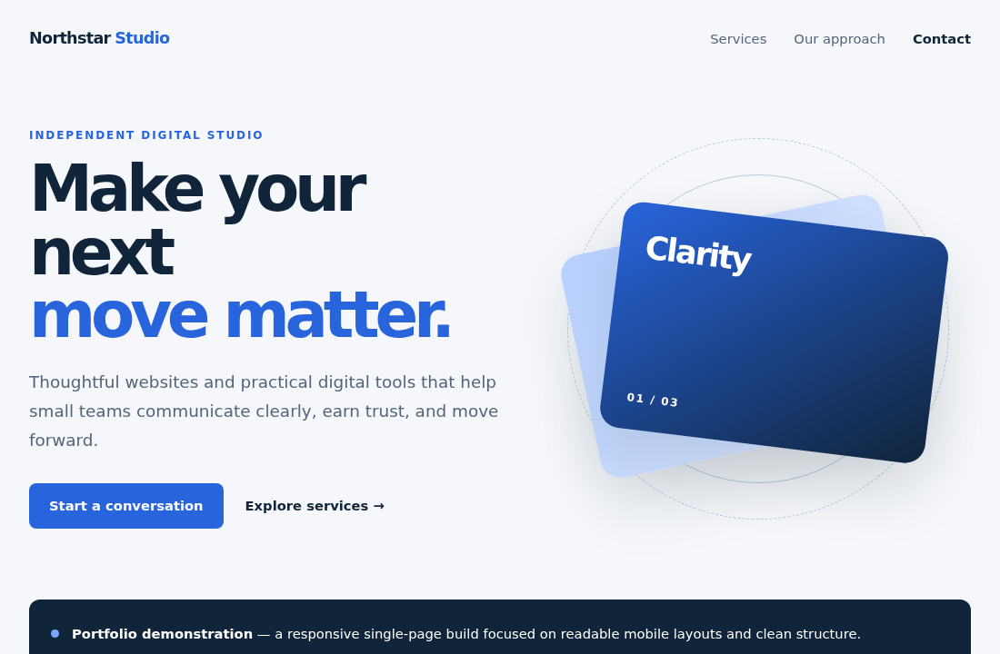

01 / WEB CI verified

Frontend repair · Responsive design
Responsive Landing Page Repair
Restored mobile readability, corrected layout behavior, removed duplicated content, and strengthened baseline accessibility.
- Responsive layout and typography fixes
- Semantic structure, focus states, reduced motion
- Seven automated acceptance checks